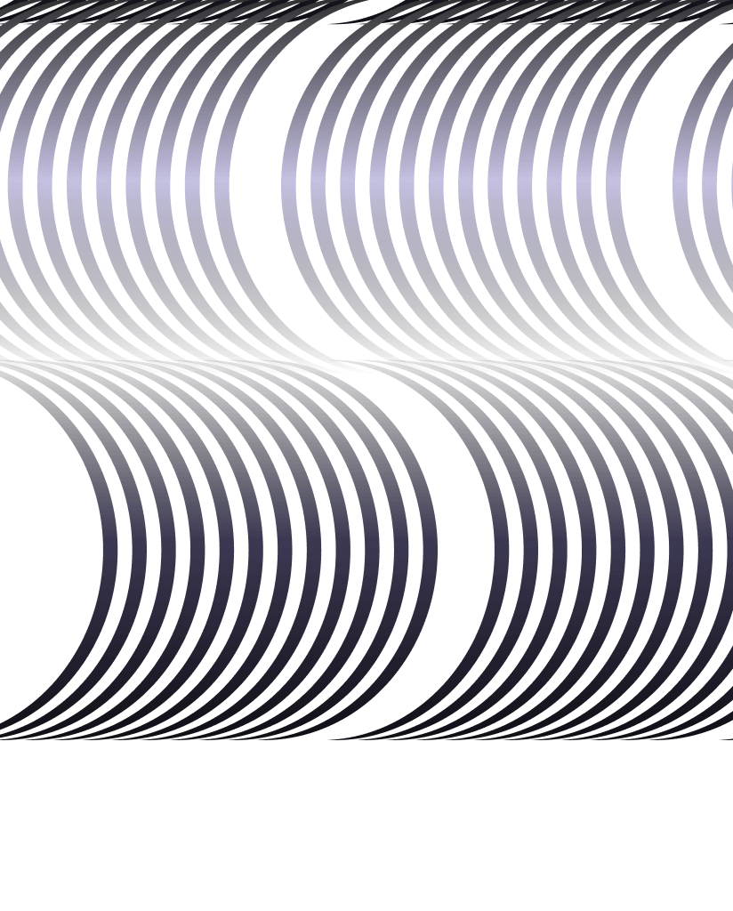

Design and execution
Corporate &
Business Strategy
Explore service
Advisory
- Corporate & board strategy reviews
- Business unit diagnostics
- Transformation opportunity scans
Design
- Vision, mission & strategic narrative
- Operating model design
- Roadmaps for transformation
Execution
- Strategy rollout & alignment sessions
- OKR / KPI frameworks
- Change & performance management